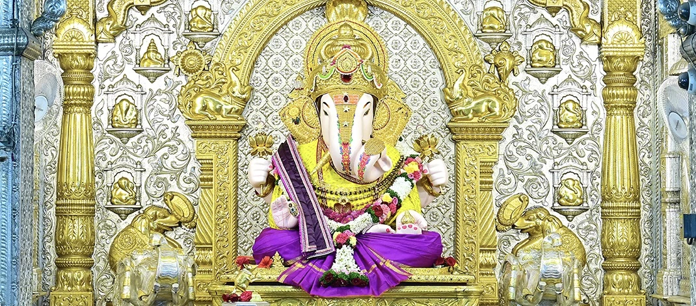

HISTORY

he deity of Lord Ganesha was incepted by Shri Dagdusheth Halwai and his wife Lakshmibai way back, when they lost their only son to the plague epidemic. Every year, the Ganpati festival was celebrated with deep faith and enthusiasm, not only by Dagdusheth’s family but the entire neighborhood. Tatyasaheb Godse, then in his early youth, was a zestful participant in the celebrations. In later years, when Lokmanya Tilak made Ganpati festival a public celebration to bring people together for the freedom struggle, Dagdusheth Ganpati became the most respected and popular idol in Pune.
In 1952, the responsibility of organizing the festival at Shrimant Dagdusheth Halwai Ganpati temple officially fell upon Tatyasaheb and his group of friends. Under Tatyasaheb’s able guidance and leadership, his associates like Mamasaheb Rasane, Adv. Shankarrao Suryavanshi and K. D. Rasane planned and executed the festival with meticulous planning and professionalism, and since then, there was no looking back for them. As generous donors and devotees contributed towards the temple fund, Tatyasaheb and his friends thought what better way to worship the Lord than to serve our own fellow beings.
, the young motivated group took the activities of the festival and the temple beyond traditional worship, into the domain of social and cultural development. Besides a rich religious schedule at the temple, they engaged in addressing the social and political problems of the state.Under the aegis of Dagdusheth Halwai Sarvajanik Ganpati Trust, they started several social initiatives including educational and financial support to deprived children, micro finance to small businessmen and vendors through Suvarnayug Sahakari Bank, old age home, and rehabilitation of workers working at brick kilns, to name a few.
Today, by Lord Ganesha’s blessings, Shrimant Dagdusheth Halwai Sarvajanik Ganpati Trust has flourished into a veteran organization that is gratified to worship the Lord through its service to humanity.
To download the PDF of Shreemant Dagdusheth Halwai Ganpati Trust Ganesh Ahwal 2023
AHWAL 2023
DOWNLOAD